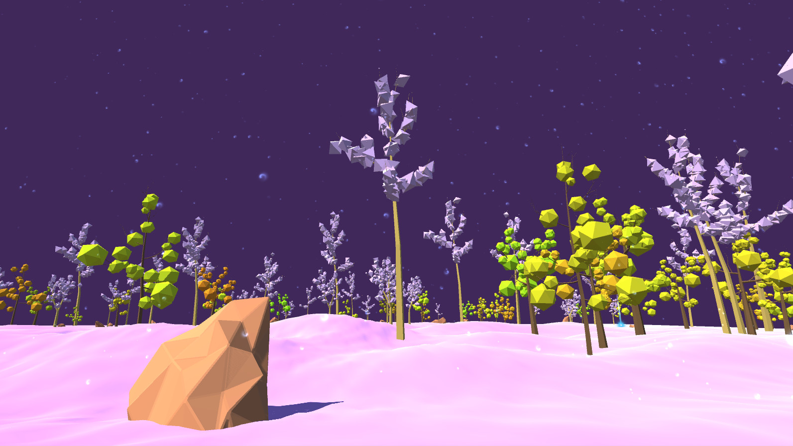

Walk The Line

Expérience contemplative accompagnant mon mémoire pour mon M1/M2 Jeux Vidéo
Réalisé en solo
[Unity] - Développement, Graphisme, Sound Design & Game Design
Date
: Juillet 2016
Statut
: Terminé
<a href="https://pampou.itch.io/walk-the-line">Walk The Line by Pampou</a>